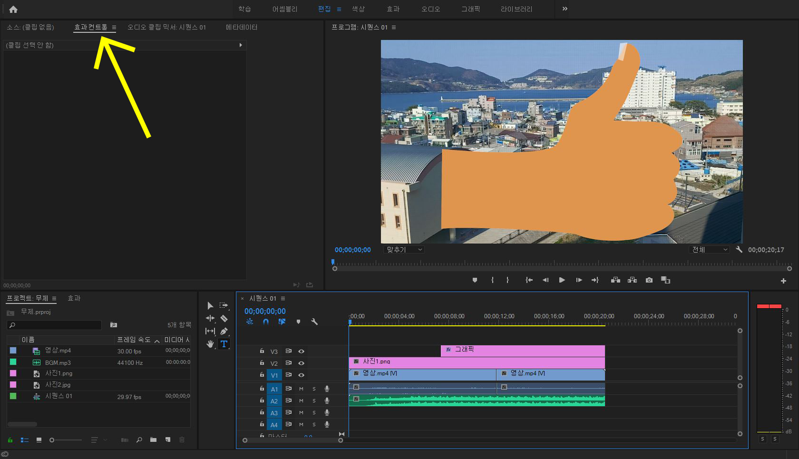
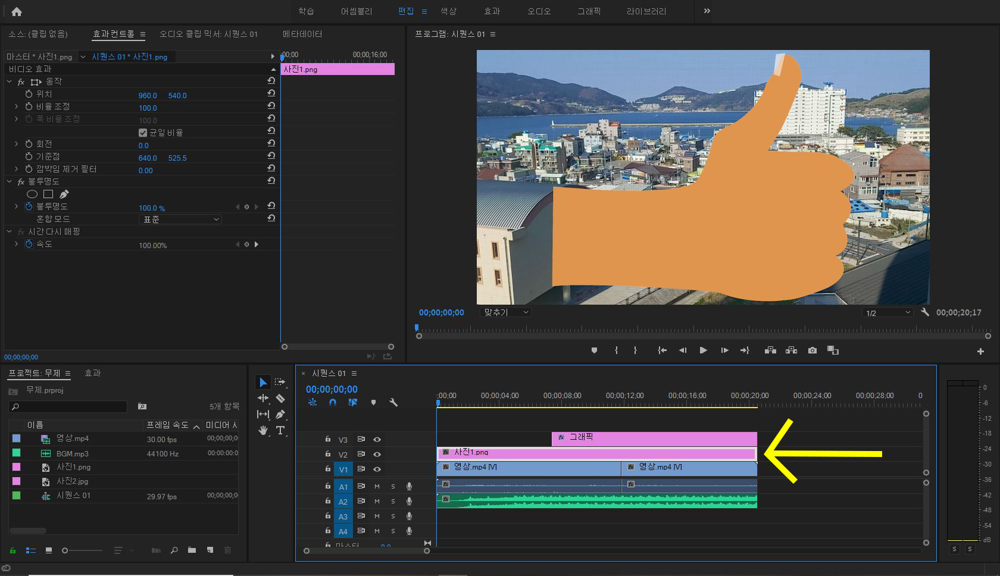

효과 컨트롤 이해하기
이제 premiere pro에서 가장 중요한 부분 중 하나인 효과에 대해 알아보겠습니다.
먼저 왼쪽 위에 "효과 컨트롤" 이라는 곳에 들어갑니다.

일단 사진에 효과를 넣어 봅시다.
시퀀스에서 사진을 선택해줍니다.
효과컨트롤 창을 보면 이렇게 되어 있을 겁니다.
우선 기초적인 몇가지만 알아봅시다.
맨 위의 '위치'라고 되어있는 부분 옆에 숫자들이 보이시나요?
저 숫자를 마우스로 꾹 누른 채 좌우로 움직여 보세요.
그러면 사진이 좌우로 움직일 겁니다.
그리고 그 옆에 있는 숫자를 누르고 좌우로 움직이면
사진이 위 아래로 움직일 것 입니다.
밑에 '비율 조정'은 사진의 크기를 조정하는 것입니다.
이것 또한 마우스로 꾹 누른 채 좌우로 움직이면 크기가 바뀝니다.
이렇게 위치와 비율조정을 이용하여
사진을 왼쪽 아래에 배치해 두었습니다.
효과 컨트롤의 기초는 여기까지 하고
다음은 '애니메이션 사용하기' 입니다.